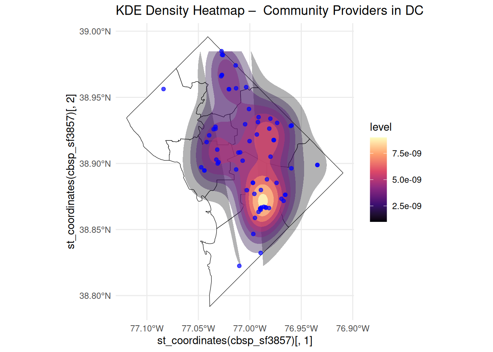
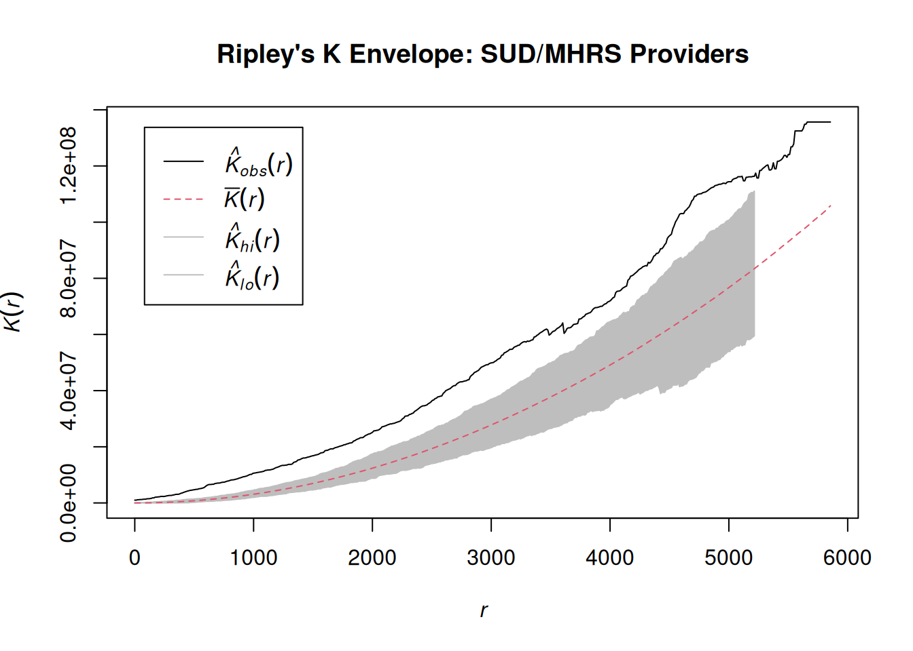
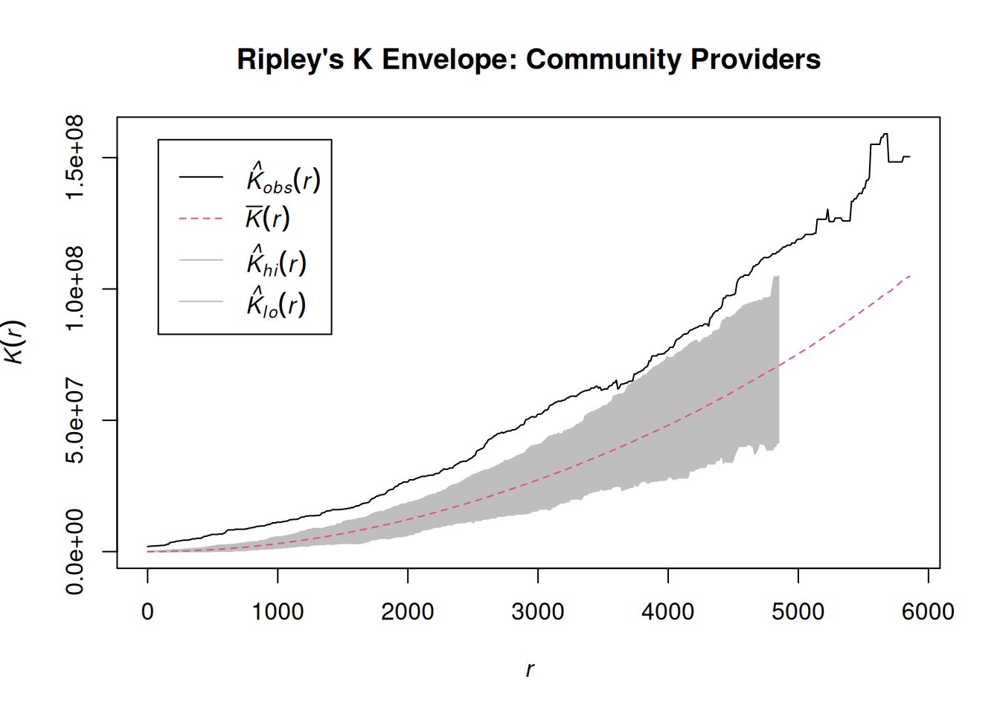

Access to mental-health and substance-use support services varies widely across Washington, DC. Although the District has many behavioral-health providers, the locations of these services do not always match the areas where needs are greatest. Research shows that the physical distance between residents and service points is an important factor that shapes whether people can obtain timely care (Guagliardo, 2004). When resources are concentrated in specific neighborhoods, communities with higher behavioral-health burdens may face greater difficulty reaching support.
Socioeconomic and racial patterns in DC further reinforce these gaps. Wards east of the Anacostia River experience higher poverty levels and higher behavioral-health needs, yet many providers remain concentrated in central and northwest parts of the city. This creates a spatial mismatch that raises concerns about fairness and accessibility.
This project examines the distribution of behavioral-health providers in Washington, DC and compares it with American Community Survey indicators related to income, poverty, and racial composition. Point mapping, kernel density estimation, and quadrat-based spatial statistics are used to identify service clusters and areas with limited coverage. The goal is to provide a clear description of spatial inequalities and highlight neighborhoods where access may be constrained.
Literature Review
Studies of mental-health service access in the United States show that availability often differs across neighborhoods. Areas with higher poverty levels and larger minority populations tend to face persistent shortages of mental-health professionals, even when the overall regional supply appears adequate (Thomas, Ellis, Konrad, & Morrissey, 2009). These shortages can lead to delayed treatment and long-term disparities in behavioral-health outcomes.
Researchers also find that mental-health providers frequently cluster in higher-income or institutionally stronger neighborhoods. This pattern appears in many urban settings and results in fewer nearby service options for low-income or majority-Black communities (Cummings, Wen, Ko, & Druss, 2013). Such spatial concentration shapes who can realistically obtain care, especially in cities with strong racial and socioeconomic divisions.
These findings suggest that analyzing spatial patterns and neighborhood characteristics is essential for understanding behavioral-health access in DC. Prior work points to the importance of comparing provider locations with indicators such as income, poverty, and race. Building on this literature, this study evaluates whether DC’s service network aligns with community needs or whether gaps appear when demographic and socioeconomic information is taken into account.
Methodology
The population centroids we use herein might require some explanation, since the term “centroid” can be ambiguous.
Here, the population centroids are drawn from
Hypothesis
This study evaluates whether the spatial distribution of two categories of behavioral-health providers— (1) SUD/MHRS providers offering substance-use and rehabilitation services, and (2) community-based behavioral-health service providers—reflects a needs-based allocation of care in Washington, DC.
We hypothesize that:
H1: Both provider types exhibit significantly elevated spatial intensity in high-needs neighborhoods, particularly Wards 7 and 8, which face higher poverty rates and greater behavioral-health burdens.
This hypothesis posits a first-order process in which demand-side vulnerability predicts the concentration of service points. If true, the intensity functions for both provider datasets should peak east of the Anacostia River and diverge noticeably from CSR-generated patterns.
Exploratory Data Analysis (EDA)
To build initial intuition about the spatial distribution of behavioral-health services in Washington, DC, I begin by visualizing the two provider types separately and jointly. The goal of this stage is to observe general spatial patterns that may guide subsequent analysis of first-order properties.
library(readr)library(sf)
Linking to GEOS 3.12.1, GDAL 3.8.4, PROJ 9.4.0; sf_use_s2() is TRUE
library(ggplot2)library(dplyr)
Attaching package: 'dplyr'
The following objects are masked from 'package:stats':
filter, lag
The following objects are masked from 'package:base':
intersect, setdiff, setequal, union
sud <-read_csv("SUD_and_MHRS_Provider_Contact_List.csv")
Rows: 123 Columns: 16
── Column specification ────────────────────────────────────────────────────────
Delimiter: ","
chr (6): AGENCY, ADDRESS, MHRS, SUD, FSMHC, GIS_LAST_MOD_DTTM
dbl (9): X, Y, WARD, PROVIDERMAPPINGID, SITEMAPPINGID, MAR_ID, X_COORDINATE,...
lgl (1): SE_ANNO_CAD_DATA
ℹ Use `spec()` to retrieve the full column specification for this data.
ℹ Specify the column types or set `show_col_types = FALSE` to quiet this message.
Rows: 74 Columns: 22
── Column specification ────────────────────────────────────────────────────────
Delimiter: ","
chr (12): PROVIDER, PROVIDER_TYPE, ADDRESS, WARD, PHONE, EMAIL, GIS_ID, GLOB...
dbl (9): X, Y, ZIPCODE, XCOORD, YCOORD, LATITUDE, LONGITUDE, MAR_ID, OBJECTID
lgl (1): SE_ANNO_CAD_DATA
ℹ Use `spec()` to retrieve the full column specification for this data.
ℹ Specify the column types or set `show_col_types = FALSE` to quiet this message.
The first map plots all SUD/MHRS providers (red) and community-based behavioral-health providers (blue) across the District.
ggplot() +geom_sf(data = dc_wards, fill ="gray95", color ="white") +geom_sf(data = sud_sf, aes(color ="SUD/MHRS"), size =1.8, alpha =0.8) +geom_sf(data = cbsp_sf, aes(color ="Community Provider"), size =1.8, alpha =0.8) +scale_color_manual(values =c("SUD/MHRS"="#d62728", "Community Provider"="#1f77b4" )) +theme_minimal() +labs(title ="Behavioral Health Service Providers Across Washington, DC",color ="Provider Type" ) +theme(plot.title =element_text(size =18, face ="bold"),legend.position ="bottom" )
A few clear patterns emerge:
· Providers are widely distributed across the city rather than uniformly scattered.
· Providers of both types frequently appear in similar areas, suggesting overlapping service regions, though SUD/MHRS providers show slightly broader spread. Both provider types appear more common in central and southeastern DC, with noticeably fewer providers in the northwest.
· A visible cluster emerges east of the Anacostia River, where Wards 7 and 8 are located.
While this map alone does not confirm clustering, it strongly suggests that the spatial pattern is structured rather than random, especially in southeastern DC.
KDE Heatmaps – Spatial Intensity of Behavioral-Health Providers
To examine first-order spatial patterns more directly, I estimate kernel density surfaces for both SUD/MHRS providers and community-based providers. Despite representing different types of behavioral-health services, their KDE surfaces show remarkably similar spatial structures across Washington, DC.
cbsp_sf3857 <-st_transform(cbsp_sf, 3857)ggplot() +geom_sf(data = dc_wards, fill ="white", color ="black", size =0.3) +stat_density_2d(data = cbsp_sf3857,aes(x =st_coordinates(cbsp_sf3857)[,1],y =st_coordinates(cbsp_sf3857)[,2],fill =after_stat(level),alpha =after_stat(level)),geom ="polygon",contour =TRUE,n =200 ) +scale_fill_viridis_c(option ="magma") +scale_alpha(range =c(0.3, 0.8), guide ="none") +geom_sf(data = cbsp_sf3857, color ="blue", size =1.5, alpha =0.7) +labs(title ="KDE Density Heatmap – Community Providers in DC" ) +theme_minimal() +coord_sf(xlim =st_bbox(dc_wards)[c("xmin","xmax")],ylim =st_bbox(dc_wards)[c("ymin","ymax")])

Both heatmaps reveal:
· A dominant intensity hotspot in Ward 8, with density peaking just east of the Anacostia River.
· A secondary band of elevated density extending into southern Ward 7, again aligning with neighborhoods that face higher poverty rates and greater behavioral-health burdens.
· Moderate-intensity zones in central DC, though weaker and less extensive than those in the southeastern wards.
· Consistently low intensity across the affluent northwestern wards, where behavioral-health needs tend to be lower.
Although the SUD/MHRS KDE shows a slightly stronger peak, both provider types follow essentially the same spatial pattern: the highest service intensity occurs in the same high-need, predominantly Black, lower-income communities. The similarity of these KDE surfaces indicates that the two provider networks respond to common underlying demand-side pressures and supports the idea that DC’s behavioral-health infrastructure is more needs-driven than supply-driven.
Hypothesis Testing (Regression)
H₁: Behavioral health service providers in Washington, DC exhibit significant spatial clustering, particularly in areas with historically higher service needs.
I evaluate this hypothesis using Ripley’s K function with Monte Carlo simulation envelopes (999 simulations), comparing observed spatial patterns to a null hypothesis of complete spatial randomness.
Warning: 1 point was rejected as lying outside the specified window
Warning: data contain duplicated points
summary(sud_ppp)
Planar point pattern: 123 points
Average intensity 4.201642e-07 points per square unit
*Pattern contains duplicated points*
Coordinates are given to 9 decimal places
Window: polygonal boundary
single connected closed polygon with 7364 vertices
enclosing rectangle: [-8584933, -8561515] x [4691871, 4721078] units
(23420 x 29210 units)
Window area = 292743000 square units
Fraction of frame area: 0.428
summary(cbsp_ppp)
Planar point pattern: 73 points
Average intensity 2.493657e-07 points per square unit
*Pattern contains duplicated points*
Coordinates are given to 9 decimal places
Window: polygonal boundary
single connected closed polygon with 7364 vertices
enclosing rectangle: [-8584933, -8561515] x [4691871, 4721078] units
(23420 x 29210 units)
Window area = 292743000 square units
Fraction of frame area: 0.428
*** 1 illegal point stored in attr(,"rejects") ***
plot(env_sud, main ="Ripley's K Envelope: SUD/MHRS Providers")

plot(env_cbsp, main ="Ripley's K Envelope: Community Providers")

These two figures present Ripley’s K envelopes for community-based providers and SUD/MHRS providers, respectively.
For both provider types, the observed K function lies consistently above the expected K under complete spatial randomness across a wide range of distances, frequently exceeding the Monte Carlo simulation envelopes. This indicates statistically significant spatial clustering rather than random spatial distribution.
The clustering effect is notably stronger for SUD/MHRS providers, whose observed K function departs more substantially from the CSR expectation and envelope, suggesting more concentrated spatial aggregation. These findings are consistent with earlier KDE visualizations, which showed dense provider clusters in specific areas of the city.
Discussion
This analysis finds clear evidence that behavioral health service providers in Washington, DC are not randomly distributed in space. Both community-based providers and SUD/MHRS providers exhibit statistically significant spatial clustering across a wide range of distances, as demonstrated by Ripley’s K functions exceeding the Monte Carlo envelopes under the Complete Spatial Randomness (CSR) assumption.
The KDE visualizations further suggest that high-density clusters for both provider types are concentrated in the southeastern portion of the city, particularly in Wards 7 and 8. These areas are historically characterized by higher proportions of Black residents and greater socioeconomic disadvantage. The observed clustering therefore appears consistent with a demand-responsive pattern, in which service providers locate in neighborhoods with higher behavioral health needs rather than being evenly distributed across the city.
Importantly, while clustering may indicate improved geographic proximity to services in high-need areas, it does not necessarily imply adequate access or service capacity. Spatial concentration can coexist with shortages if provider density remains insufficient relative to population size or severity of need. Moreover, clustering patterns may also reflect historical planning decisions, zoning constraints, transportation access, or the availability of suitable facilities, rather than purely need-based allocation.
Several limitations should be noted. First, this analysis focuses on provider locations rather than service utilization or capacity, which limits conclusions about actual access to care. Second, the analysis does not explicitly control for demographic or socioeconomic covariates at the ward level. Finally, the CSR-based null hypothesis does not account for underlying population density, meaning that some degree of clustering may be mechanically driven by where people live rather than by provider behavior alone.
Conclusion
This project examined the spatial distribution of behavioral health service providers in Washington, DC using kernel density estimation and Ripley’s K function. The results provide strong evidence against Complete Spatial Randomness, indicating that both community-based providers and SUD/MHRS providers are significantly clustered across multiple spatial scales.
The clustering patterns are most pronounced in southeastern DC, aligning with neighborhoods that historically face higher behavioral health needs. These findings suggest that provider locations are shaped by underlying demand and structural factors rather than random placement. However, spatial clustering alone does not guarantee equitable access, as provider capacity, quality, and affordability remain unobserved in this analysis.
Future work could extend this analysis in several ways. First, incorporating ward-level demographic and socioeconomic variables would allow for formal testing of associations between provider density and population characteristics. Second, adjusting for population density through inhomogeneous point process models would help distinguish demand-driven clustering from purely demographic effects. Finally, integrating service utilization data could provide a more complete picture of whether spatial proximity translates into meaningful access to behavioral health care.
References
Cummings, J. R., Allen, L., Clennon, J., Ji, X., & Druss, B. G. (2017). Geographic Access to Specialty Mental Health Care Across High- and Low-Income US Communities. JAMA psychiatry, 74(5), 476–484. https://doi.org/10.1001/jamapsychiatry.2017.0303
Guagliardo, M.F.(2004) Spatial accessibility of primary care: concepts, methods and challenges. Int J Health Geogr 3, 3 . https://doi.org/10.1186/1476-072X-3-3
Thomas, K. C., Ellis, A. R., Konrad, T. R., Holzer, C. E., & Morrissey, J. P. (2009). County-level estimates of mental health professional shortage in the United States. Psychiatric services (Washington, D.C.), 60(10), 1323–1328. https://doi.org/10.1176/ps.2009.60.10.1323